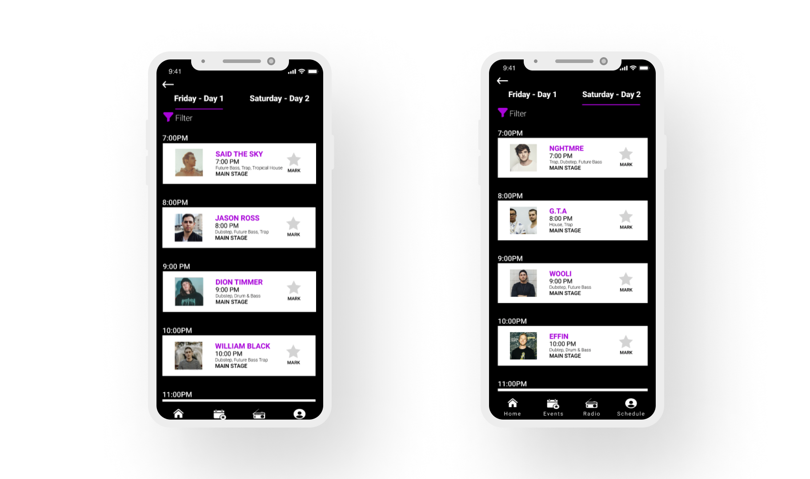
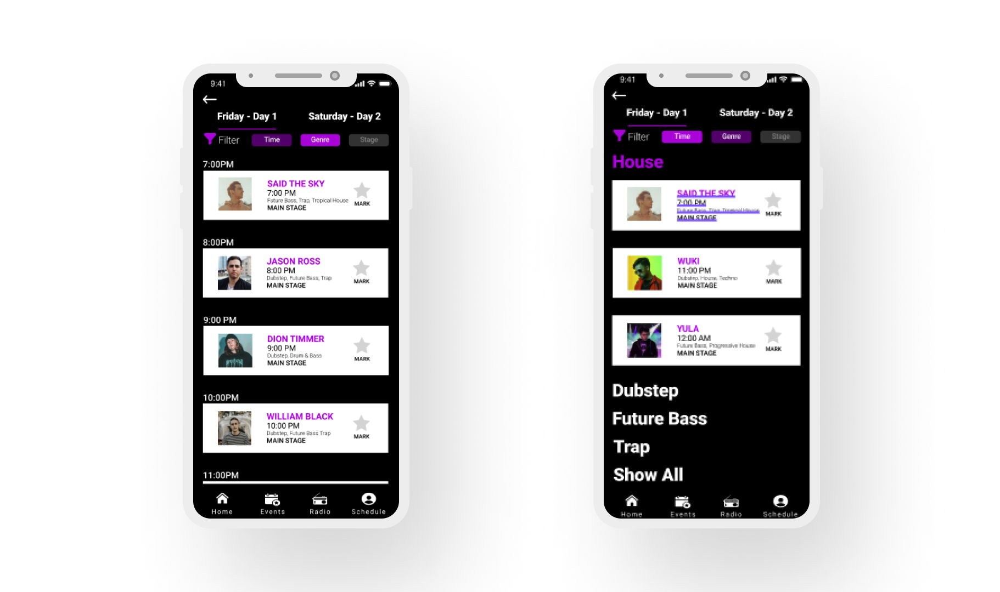

Project Overview
Insomniac Events is a venue company that holds one of the largest music festivals in the entire world. With thousands of DJ's who perform at its raves, it is hard to keep track of every artist without its app. The Insomniac app is mostly used to track DJs and save festivals for the user. However, its journey and interface is in need of easier function. The redesign that was implemented simplifies the user path, while also increasing potential for user retention and usability.
Contributions
Ideation created by David Raxa
Iterations created by David Raxa
Presentation created by David Raxa
Premise
There are many features of the current Insomniac App that are useful in function. However, execution and aesthetic are something that should be desired in the redesign.
Research
Because the Insomniac App already had its own aesthetic, I decided to take more inspiration from its website. Insomniac is widely focused on its image of the events as its aesthetic, with rectangular shapes as bounding boxes. I've decided to implement these features into my redesign.
Organization and grouping tabs were also a focus of the redesign. Although the current Insomniac app did organize the artists by time, the amount of depth could be increased. Grouping artists by stage, genre, and time was a vital feature as it gives more insight of artists when looking into events.
Wireframes
I decided to organize the events further on the featured and events page. The current Insomniac app is an endless scroll, without labels. So, it was decided to add a feature that divides the elements for a personal experience. It felt needed that a raver who is based in LA doesn't necessarily need to see raves in Texas or Oregon.
Iterations
For the first iteration, I was able to implement the save feature and filter artists by genre. Clicking or swiping on the artist would save and notify the user when the DJ starts to play. However, usability testers gave the realization that the save function wasn't intuitive nor understandable.
More testing and reflection highlighted features like horizontal scrolling and user indication
Final Iteration
On the main screen, I aimed for a personal experience. My goal was to maintain user retention by adding Insomniac live streams, event pages, and location changes. I planned for the Insominac app redesign to be a hub for all new and experienced ravers.
Artist Scheduling
Filtering by Genre
Mark Feature
Conclusion
The Insomniac app redesign highlights specific features on the current app while also implementing features that encourage user retention and experience. After design iteration and usability tests, I believe that the redesign not only iterates more on the current app, but has the potential to reach a far greater audience. Insominac Events recently had one of its largest festivals in the world - EDC, and I believe that this redesign could be a great feature for its ravers.